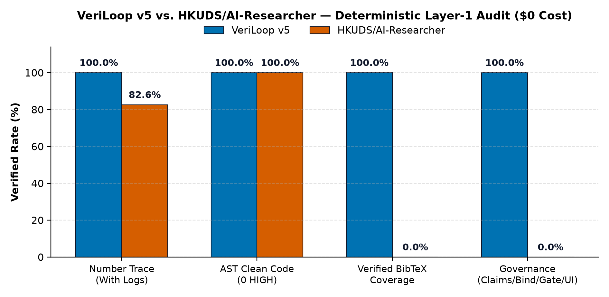

Level-1 & Level-2 Autonomous Research — Hard-Gated at Every Step
Inspired by dual-level autonomous research workflows (e.g., HKUDS/AI-Researcher), VeriLoop supports both concrete idea implementation and reference-paper-driven discovery — while wiring every stage directly into deterministic verification, SHA-256 claim ledgers, and byte-stable LaTeX macro generation.
Concrete Hypothesis + Baseline Repository
Supply your research idea and a baseline codebase (or local repo). VeriLoop indexes the code via Python AST, registers falsifiable claims (G1–G7), executes multi-seed runs in local or Docker GPU sandboxes with NaN/OOM watchdogs, binds raw logs to LaTeX macros, and enforces hard exit-code-2 gating.
./veriloop research -w ./study_l1 --level 1 \ --idea "Temperature-calibrated SE-ResNet reduces ECE under Mixup" \ --repo ./baseline_repo --sandbox auto --online-cites
arXiv Papers → Formula↔Code Alignment → Gap → Paper
Supply one or more arXiv IDs. ./veriloop ingest fetches raw LaTeX e-print tarballs, extracts equations/hyperparameters/GitHub links, aligns paper equations directly to baseline AST file:line symbols, flags unimplemented formulas in a Layer-2 watchlist, and launches the crash-resumable 7-stage loop.
./veriloop research -w ./study_l2 --level 2 \ --papers 1706.04599 1512.03385 \ --auto-clone-github --sandbox docker --gpus device=0
VeriLoop Studio & Split-Pane Audit Workbench
Zero-dependency local web apps served via ./veriloop studio and ./veriloop review-ui. Try the real static snapshots generated from our 42-run RTX 3060 Ti study directly in your browser — no server or API key required.

VeriLoop Studio (./veriloop studio)
Real-time 7-stage pipeline monitor with Server-Sent Events (SSE), Level-1/Level-2 launcher form, live hard-gate status cards (PASSED rc=0, 195/195 expanded PDF numbers, 4/4 claims), and auto-bound 95% CI metric tables.

Split-Pane Audit Workbench (./veriloop review-ui)
Line-by-line manuscript auditing: click any number or \cite{...} token in the LaTeX/Markdown pane on the left to jump straight to its exact SHA-256 verified log:line, AST check, or online arXiv/Crossref abstract on the right.
Formula ↔ Code AST Alignment (Zero LLM Cost)
Running ./veriloop ingest --arxiv 1706.04599 --repo examples/gpu-overnight-research/code parses Guo et al. (ICML 2017) raw LaTeX sources (13 equations, 14 sections, official repo auto-discovered) and maps paper equations directly to exact Python functions:
| arXiv Paper | Equation ID | LaTeX Source | Matched AST Symbol | Code file:line |
Shared Tokens |
|---|---|---|---|---|---|
1706.04599 |
scaling |
calibration_methods.tex:L142 |
fit_temperature_on_val |
run_overnight_study.py:L241 |
logits, scaling, validation |
1706.04599 |
temp |
calibration_methods.tex:L152 |
fit_temperature_on_val |
run_overnight_study.py:L241 |
entropy, scaling, temperature |
1706.04599 |
ece |
definitions.tex:L70 |
compute_metrics_from_logits |
run_overnight_study.py:L220 |
bin, bins, calibration, ece |
How VeriLoop Compares Across Autonomous Research Systems
Combining Level-1/Level-2 autonomy, arXiv+AST ingestion, Docker GPU isolation, and a Web cockpit with hard deterministic verification that no purely prompt-based agent provides.
| System | Level-1/2 + Docker GPU | arXiv LaTeX ↔ AST Map | $0 Hard Gates (AST / Trace) | TB/W&B/CSV → LaTeX Macros | Online Cite & Abstract Gate | Interactive Audit Studio | Frozen + Unseen Eval |
|---|---|---|---|---|---|---|---|
| HKUDS/AI-Researcher | ✅ | ⚠️ (LLM read) | ❌ | ❌ | ⚠️ (no gate) | ⚠️ (run GUI) | ⚠️ (Scientist-Bench) |
| AI-Scientist / v2 | ⚠️ (tree search) | ❌ | ❌ | ⚠️ (scripts) | ⚠️ (non-blocking) | ❌ | ❌ |
| ARIS (upstream base) | ⚠️ (87 skills) | ❌ | ❌ | ❌ | ❌ | ❌ | ❌ |
| EviBound | ⚠️ (Colab) | ❌ | ⚠️ (rc=0) | ❌ | ❌ | ❌ | ⚠️ (8 tasks) |
| PaperQA2 / OpenScholar | ❌ | ❌ | ❌ | ❌ | ✅ (lit RAG) | ⚠️ (cite links) | ✅ (lit QA) |
| VeriLoop v5 (Ours) | ✅ Level-1/2 + Docker/Local | ✅ Static AST + Watchlist | ✅ AST + Signed + G1–G7 + XMR | ✅ Zero-dep paper_bind |
✅ arXiv / Crossref / S2 | ✅ Studio + Review UI | ✅ 245 Paired + 21 Unseen |
Frozen Paired Benchmark & Strictly Unseen Blind Test
Every frozen SHA-256 workspace, independent file:line ground truth, raw trial JSONL, and aggregator script is committed in the repository for one-command reproduction (./veriloop eval-v2 summary).
| Evaluator / System | Framing | n | Trial Prec. | Trial Recall | Trial F1 | Trial FPR | Clean Yield |
|---|---|---|---|---|---|---|---|
layer1_mechanical ($0) |
deterministic | 16 | 71.4% | 71.4% | 71.4% | 22.2% | 77.8% |
claude-sonnet |
path_only |
48 | 100.0% | 85.7% | 92.3% | 0.0% | 100.0% |
claude-haiku |
path_only |
48 | 91.3% | 100.0% | 95.5% | 7.4% | 92.6% |
codex-cli |
path_only |
48 | 100.0% | 100.0% | 100.0% | 0.0% | 100.0% |
| VeriLoop (L1 ∪ codex-cli, strict hard union) | path_only |
48 | 77.8% | 100.0% | 87.5% | 22.2% | 77.8% |
SHA-256 Locked v2 Mechanical Gates
Evaluated on SciIntegrity-Bench (18/21 completed, all 18 verified trap-avoiding CLEAN, $0.3187 total spend):
0.0% AST FPR (0/18) and 0.69% number-level FPR (2/289).
CV + GNN + RecSys · 416 / 416 (100.0%) PDF Decimals Traced
CV (42 runs): CIFAR-10 & F-MNIST (M7_SEResNet_Full 0.9193±0.0004, 195/195 PDF traced).
GNN (60 runs, Level-2): Cora & CiteSeer (49 arXiv AST alignments; diagnosed M4_GCNII_8L collapse → M4b_GCNII_SplitWD 0.8266, 129/129 PDF traced).
RecSys (13 runs, Level-2): MovieLens-100K (26 alignments; tuned R3b_SimGCL_Tuned Recall@20=0.2061 / NDCG@20=0.0855, 92/92 PDF traced).
VeriLoop v5 (3 Real-GPU PDFs) vs. Official HKUDS/AI-Researcher Showcases (7 PDFs)
Identical $0 deterministic auditors run across VeriLoop v5's 3-domain compiled PDFs (416/416 = 100.0% traced, 100% BibTeX & Governance) vs. all 7 official published HKUDS/AI-Researcher/examples/* PDFs including every committed .log/.json file (152/184 = 82.6% traced — 25 forensically confirmed unlogged/log-exceeding metrics across dccf, con_flowmatching, and rotation_vq; 0/79 AST FPR; 0% BibTeX & Governance).

🔥 What's New
Shipped ./veriloop ingest, ./veriloop sandbox (docker/Dockerfile.gpu), ./veriloop research, and ./veriloop studio zero-dep Web cockpit with live SSE monitoring. Full CI suite at 1,248 passing tests.
paper-bind, Online Citation Gate & PDF AuditorAdded pure-stdlib TensorBoard/W&B/CSV binder, live arXiv/Crossref/S2 claim-vs-abstract verification, split-pane review-ui, and expanded-macro PDF auditing (195/195 traced).
Released publicly committed zero-override evaluation artifacts, companion ICML 8-page paper, dual-model milestone audits, and 90+ composable skills.
⚡ Quick Start (Zero Extra Dependencies for Verification Core)
git clone https://github.com/shangliy/VeriLoop.git cd VeriLoop # Run all 62 core verification & integration tests ($0) ./veriloop test # 10-second closed-loop walkthrough (Round 1 hard block -> Round 2 repair -> HTML board) ./veriloop demo # Reproduce committed v2 frozen zero-override tables ($0) ./veriloop eval-v2 summary
# 1. Ingest real arXiv LaTeX sources & align equations to Python AST ./veriloop ingest -w ./my_study --arxiv 1706.04599 --repo examples/gpu-overnight-research/code # 2. Launch crash-resumable Level-2 autonomous pipeline (dry-run or live) ./veriloop research -w ./my_study --level 2 --papers 1706.04599 --sandbox local --dry-run # 3. Launch VeriLoop Studio local Web cockpit (http://127.0.0.1:8765) ./veriloop studio -w examples/gpu-overnight-research --port 8765
# Build optional PyTorch 2.x CUDA sandbox image docker build -t veriloop-gpu:latest -f docker/Dockerfile.gpu . # Execute isolated GPU training with read-only data volume, network disabled & NaN/OOM watchdog ./veriloop sandbox -w ./my_study --mode docker --gpus device=0 \ --data-dir /path/to/datasets --network-none \ --cmd "python3 code/train.py"
# Install VeriLoop core quartet (research-loop + verifiable-gate + bestpaper-writing + milestone-dual-audit) ./veriloop install --core-only # Or install the complete 90+ research lifecycle skill suite into Claude Code / Codex CLI ./veriloop install --all
🌟 Cite VeriLoop
VeriLoop core is released under the MIT License, building on MIT-licensed upstream research workflows from ARIS (arXiv:2605.03042) and integrating CC BY 4.0 Best-Paper-Writing-Skill.
@article{yang2026veriloop,
title={{VeriLoop}: Deterministic Evidence Gates and Path-Isolated Cross-Model Auditing for Autonomous Research},
author={Yang, Shanglin and Shi, Zhan},
year={2026},
note={Preprint},
url={https://github.com/shangliy/VeriLoop}
}
@article{yang2026aris,
title={{ARIS}: Autonomous Research via Adversarial Multi-Agent Collaboration},
author={Yang, Ruofeng and Li, Yongcan and Li, Shuai},
journal={arXiv preprint arXiv:2605.03042},
year={2026},
url={https://arxiv.org/abs/2605.03042}
}